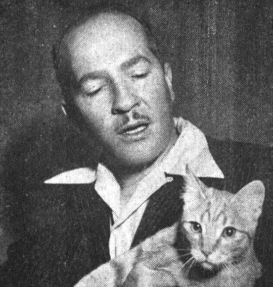

这是一本什么书
The Door into Summer，罗伯特·海因莱因 1956 年写的科幻小说，十二章，六万八千词左右。开头的处境很简单：1970 年，一个被人坑了的工程师带着他的猫，打算把自己冷冻起来，睡到 2000 年。 往下怎么走，这一页一个字都不说。


作者
罗伯特·海因莱因（Robert A. Heinlein，1907–1988），和阿西莫夫、克拉克并称英语科幻的「三巨头」。他是美国海军学院毕业的军官，学的是工程，因为肺结核退役，三十出头才开始写小说。 这个出身在书里看得见：主角是工程师，想问题、打比方、骂人，用的都是工程师和当兵的人的词。
这本书 1956 年 10 月到 12 月在 The Magazine of Fantasy & Science Fiction 上分三期连载，1957 年出单行本。
扉页上的题献是 For A. P. and Phyllis, Mick and Annette, Ailurophiles All. 四个名字是作者的朋友。ailurophile 是「爱猫的人」，来自希腊语的猫（ailouros）加上「爱」（-phile）。 整句是：献给这四位，个个都是猫奴。这本书里猫的戏份很重。
读之前先知道三件事
一、全书是一个人在说话
从头到尾是第一人称，叙述者叫 Dan。没有旁白替你解释，你知道的永远只有 Dan 知道的那么多，而且每句话都带着他的脾气：嘴硬，爱抬杠，一本正经地开玩笑。 读到一句话觉得「这也太夸张了」，多半就是他在开玩笑。
二、书里的 1970 年和 2000 年，是 1956 年想象出来的
所以书里的「历史」和你知道的对不上：书里的 1970 年以前打过一场核战争，冷冻睡眠是保险公司的寻常生意。这些是设定，不用去查。 每一章的页面里有一节「书里的世界」，把设定和真实历史分开列出来，顺便看看 1956 年的人猜中了什么、猜错了什么。
三、猫会「说话」
书里把猫叫照着声音拼出来：Waarrrh?、Naaow!、Mooorrre! 词典里查不到，念出声就懂了（最后一个是 more）。Dan 把它们当人话来回答，你也当人话读就行。
这本书的英语难在哪
句子不长，生僻的大词也不多。难在四样东西，每一章的「词与短语」主要就是对付它们：
这个站怎么用
不剧透是这个站的第一条规矩。小说的乐趣在于不知道后面会怎样，所以：
- 每一页的读前部分只告诉你去哪里、见到谁、留意什么，不说这一章发生了什么事。
- 会说到这一章情节的内容（句子讲解、理解检查）都在读后部分，默认收起，读完点一下才展开。
- 任何一页都不提后面章节的事。隔了几天再读，可以点开章头的前情，里面只有前面各章的一句话。
- 首页的我的故事线只揭开你标记读完的章。
词条里斜体的小字是它所在的那句话里连续的几个词，照着它能在书里找到位置。标着「每个字都认识」的是合起来意思变了的短语和熟词生义，卡住你的多半是这一类。点「记下」，它们会汇总到首页的词本里。